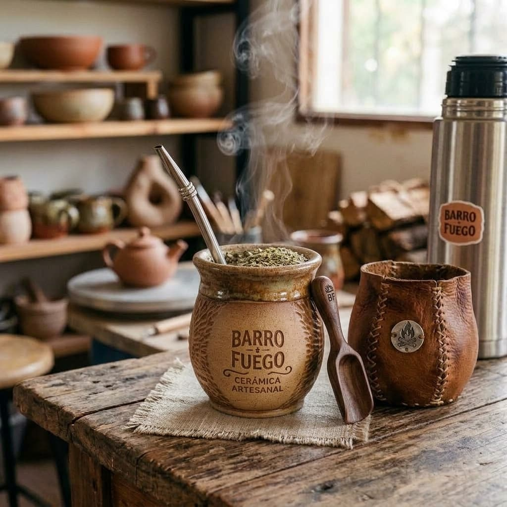
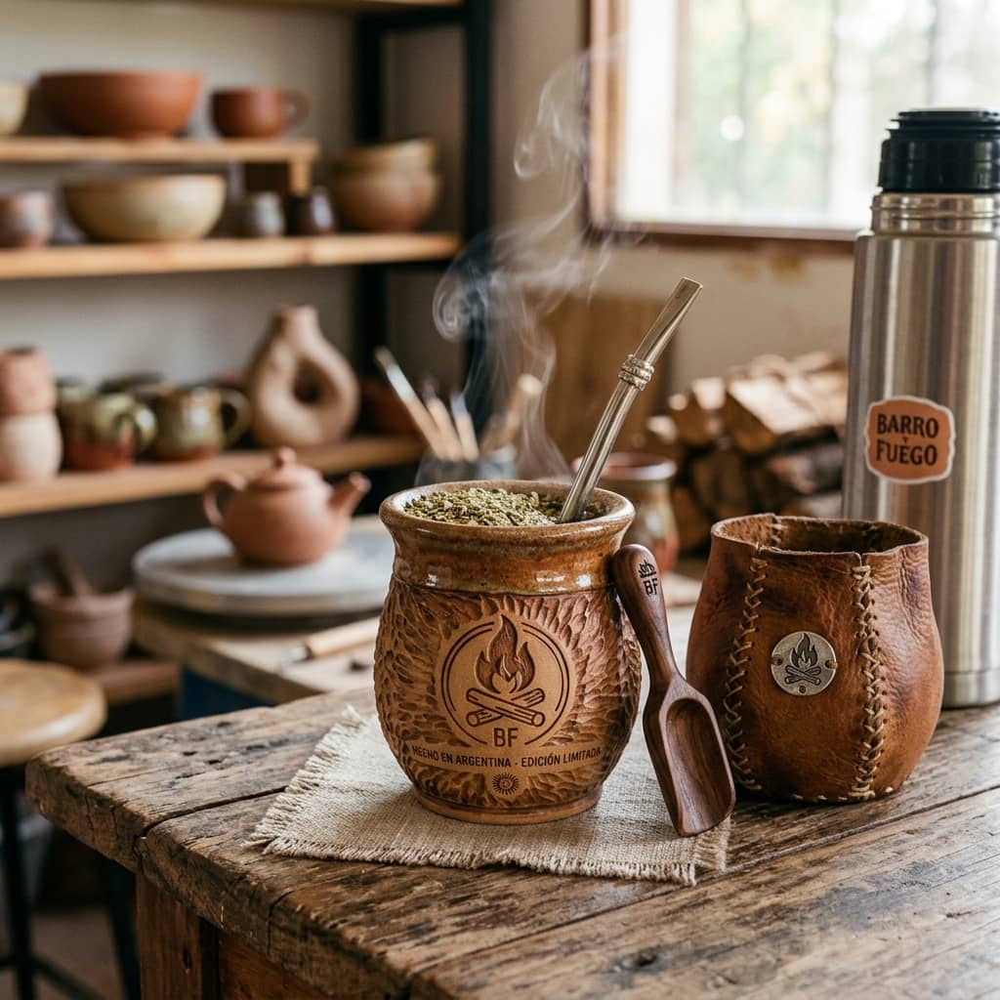
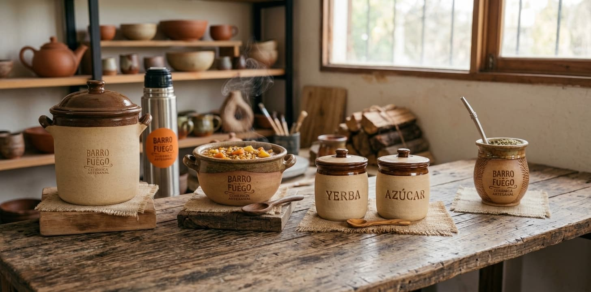
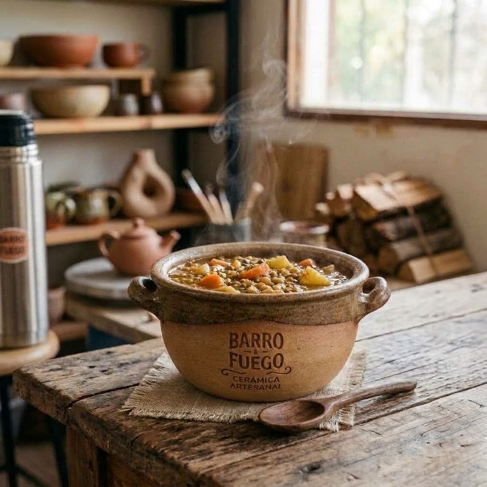
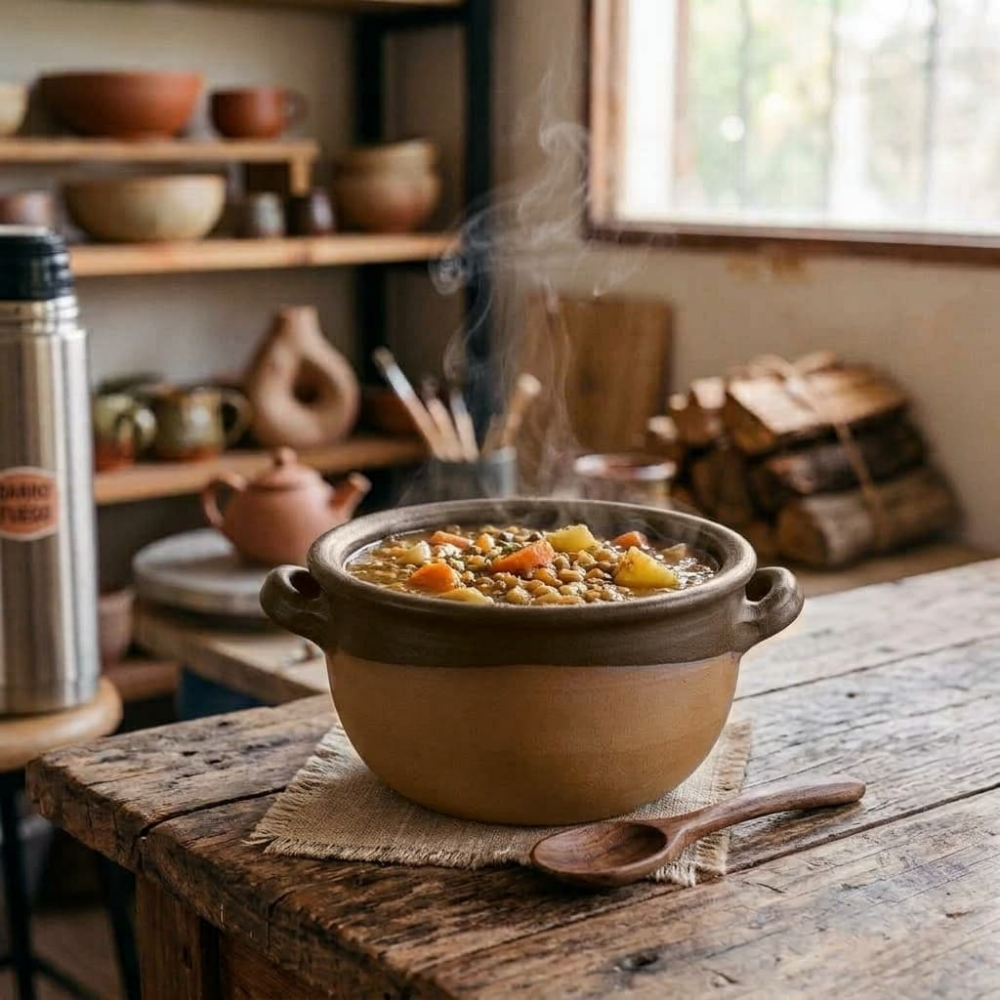
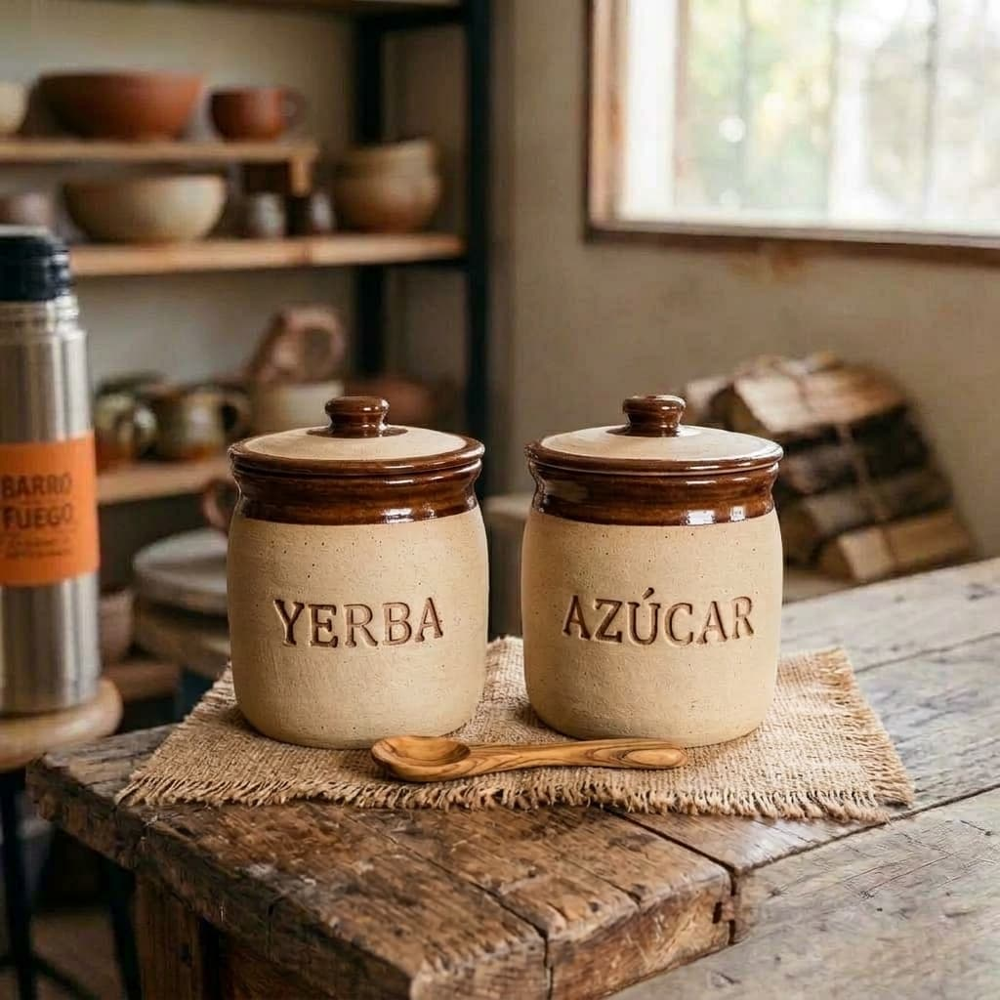
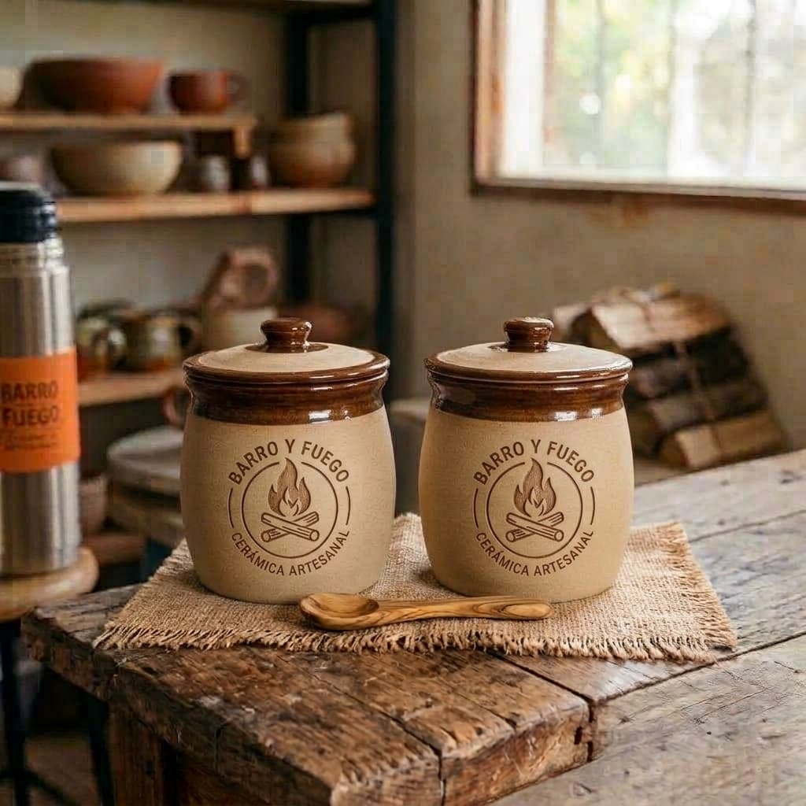
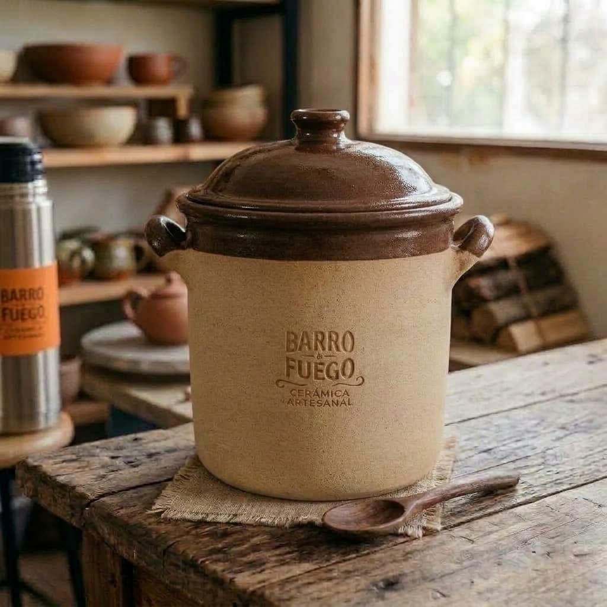
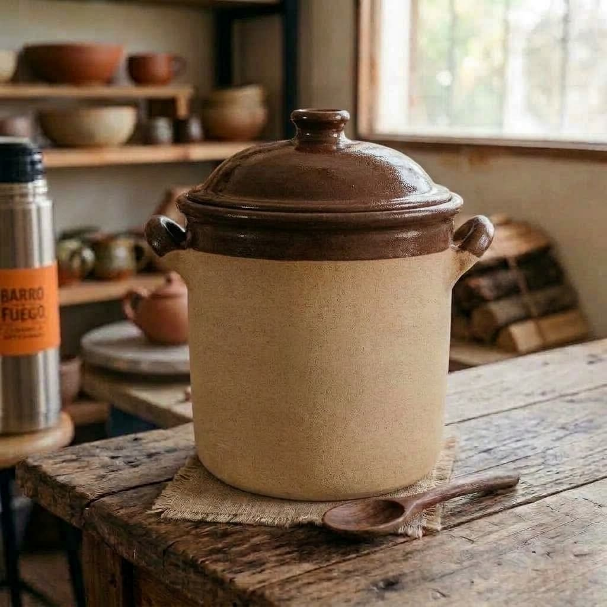

Mate Fogón
Mate de cerámica tallado a mano. Edición limitada.
$22.000
Barro y FuegoMates, cazuelas y ollas modelados y horneados en nuestro taller.



Mate de cerámica tallado a mano. Edición limitada.
$22.000

Cazuela de barro con asas. Ideal para guisos y comidas al horno.
$30.000

Yerbera y azucarera de cerámica con tapa. Se vende en combo.
$30.000

Olla alta con tapa. Ideal para guisos, locros y cocciones largas para varias personas. Capacidad de 5 litros.
$50.000Me regalé el Mate Fogón y es hermoso. Se nota que está tallado a mano, y la fogata del costado es lo que más me gusta. Lo uso todas las mañanas.
Lucía, Palermo
Hice un guiso de lentejas en la cazuela y quedó espectacular. Mantiene el calor hasta el último plato.
Sofía, Colegiales
Pedí el Set Matero y lo recibí el mismo día. Las tapas cierran muy bien y la yerba se conserva perfecta.
Andrea, Belgrano
La olla rinde un montón. Hice locro para seis personas y sobró para el día siguiente.
Ana, Recoleta
Compré el mate para regalar y la cazuela para mí. Llegaron bien embaladas y las dos son preciosas.
Claudia, Villa Crespo